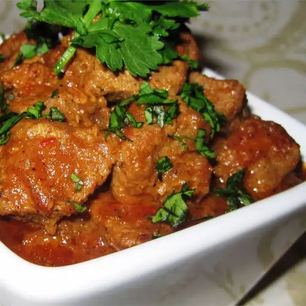

Beef Vindaloo

A great make-ahead vindaloo recipe which is a guaranteed crowd pleaser and will convert many to Indian food. It can be made with any meat and most pantry items. Serve with mashed potatoes or basmati rice.
Prep time: 20 mins
Cook time: 1 hr 10 mins
Additional time: 8 hrs
Ingredients
- ¼ cup distilled white vinegar
- ¼ cup garlic paste
- 3 tablespoons ginger paste
- 2 tablespoons plain yogurt
- 2 tablespoons salt
- 1 tablespoon ground black pepper
- 1 tablespoon ground red pepper
- 2 pounds boneless beef chuck, cut into 1-inch cubes
- ¼ cup vegetable oil
- 2 onion, chopped
- 4 roma (plum) tomatoes, chopped
- 1 cup water
- 2 tablespoons chopped fresh cilantro (Optional)
Let's Cook
- Whisk the vinegar, garlic paste, ginger paste, yogurt, salt, black pepper, and red pepper together in a mixing bowl. Mix in the beef cubes until evenly coated. Cover the bowl with plastic wrap, and marinate in the refrigerator overnight (or at least 30 minutes).
- Heat the vegetable oil in a large pot over medium heat. Cook and stir the onions in the hot oil until they soften, turn translucent, and begin turning golden brown, about 10 minutes. Add the beef cubes, and cook, stirring frequently until the meat is no longer pink on the outside, about 10 minutes more. Stir in the tomatoes and cook for 5 minutes.
- Pour in the water, and bring to a simmer. Cover and reduce heat to medium-low; cook until the beef is tender, about 40 minutes. Sprinkle with cilantro to serve.
To Main Page